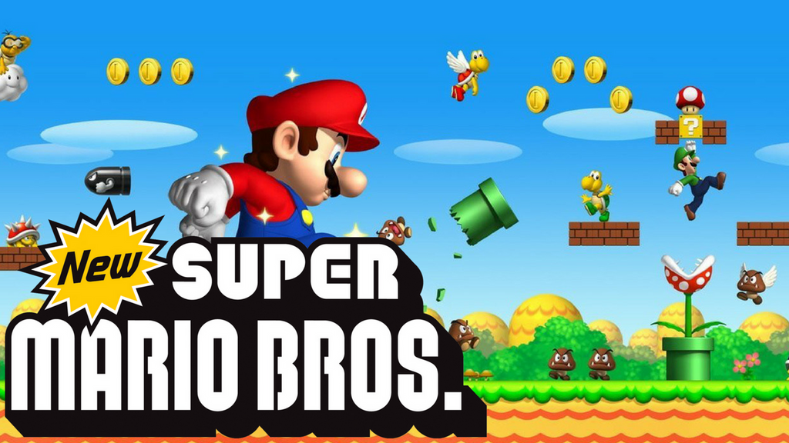

New Super Mario Bros.
A 2D platformer that brought Mario back to the classic side-scrolling style after years of 3D adventures.

What it is
Mario runs, jumps and stomps his way through eight worlds to rescue Princess Peach from Bowser Jr. The levels scroll left to right like the classics, but the characters and backgrounds are fully 3D-rendered for a fresh look.
Why it belongs here
- It made the 2D Mario formula popular again for a new generation.
- New power-ups like the Mega Mushroom, Mini Mushroom and Blue Shell add fun twists.
- Easy to pick up, but full of secrets and hidden exits.
- The series continued with Wii, Wii U and other follow-ups.